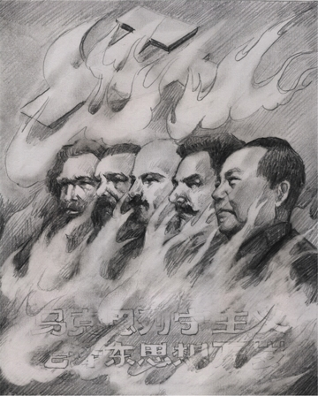

Tài liệu gốc: http://dajiyuan.com/gb/4/11/19/n722529.htm
|
 |
Hơn 5000 năm qua, dân tộc Trung Hoa xuất phát từ châu thổ sông Hoàng Hà và sông Trường Giang gây dựng giống nòi, trải bao triều đại, mới dựng xây được một nền văn minh sáng lạn. Thịnh suy, hưng vong, truyền đời lưu lại một lịch sử đến ngày nay.
Năm 1840, theo các sử gia nhìn nhận, là mốc đánh dấu điểm bắt đầu lịch sử Trung Quốc cận đại, cũng là chuyển từ một Trung Quốc cổ đại sang một Trung Quốc hiện đại. Từ bấy giờ, nền văn minh Trung Hoa về cơ bản đã nếm trải bốn làn sóng thách thức và phản ứng lớn. Ba cuộc chiến tranh đầu là: liên quân Anh Pháp đánh vào Bắc Kinh hồi đầu thập kỷ 1860, chiến tranh Trung Quốc - Nhật Bản vào năm Giáp Ngọ 1894, và chiến tranh Trung Quốc - Nga ở vùng đông bắc vào năm 1906. Đáp lại những thách đấu ấy, Trung Quốc đã phản ứng bằng súng ống nhập từ tây phương, cải cách chế độ (tức là Hiến Pháp năm Mậu Tuất 1898 và Đại Thanh lập hiến), và cách mạng Tân Hợi 1911.
Kết thúc Chiến tranh thế giới lần thứ nhất, mặc dù Trung Quốc thuộc về bên thắng cuộc, nhưng không được tính là nước mạnh thời bấy giờ. Nhiều người Trung Quốc nhìn nhận rằng Trung Quốc thực ra đã thất bại sau ba làn sóng phản ứng nói trên. Do vậy mới có vận động mùng 4 tháng 5, dẫn đến làn sóng phản ứng thứ tư: một làn sóng phản ứng cuối cùng, hoàn toàn chuyển sang ‘tây’ hoá. Rốt cuộc dẫn đến cách mạng cực đoan: phát động chủ nghĩa cộng sản.
Bài này nói lên quan điểm về kết quả làn sóng phản ứng thứ tư, về phong trào chủ nghĩa cộng sản và đặc điểm Đảng cộng sản. Nhìn lại lịch sử 160 năm qua tại Trung Quốc với gần 100 triệu người bị sát hại, rồi phân tích những gì xảy đến với văn hoá và văn minh truyền thống dân tộc, kể cả những gì dân tộc Trung Hoa đã chọn và những gì bên ngoài cưỡng bức lên dân tộc, để xem kết quả thực sự là gì?
“Những người cộng sản coi là điều đáng khinh bỉ nếu giấu giếm những quan điểm và ý định của mình. Họ công khai tuyên bố rằng mục đích của họ chỉ có thể đạt được bằng cách dùng bạo lực lật đổ toàn bộ trật tự xã hội hiện hành.” Đó là câu trích dẫn từ đoạn cuối bản Tuyên ngôn Đảng cộng sản, một tài liệu nòng cốt của Đảng. Trên thực tế, bạo lực là phương tiện mà Đảng cộng sản Trung Quốc dùng để thâu đoạt chính quyền, hơn nữa còn là phương tiện duy nhất. Đó là nhân tố di truyền tiên quyết xuyên suốt từ ngày chào đời của Đảng cho đến hôm nay.
Đảng cộng sản đầu tiên trên thế giới, như mọi người đều biết, phải nhiều năm sau khi Các-Mác qua đời mới được hình thành. Sau Cách mạng Tháng Mười Nga (1917), Đảng cộng sản Nga (Bôn-sê-vích) đã chính thức khai sinh, đó là tiền thân của Đảng cộng sản Liên Xô sau này. Đảng cộng sản Nga là kết quả của đấu tranh vũ trang với các ‘kẻ thù giai cấp’ mà thành, và trong quá trình duy trì sự tồn tại của Đảng, Đảng đã liên tục dùng bạo lực để đàn áp những đảng viên và những người dân bất đồng chính kiến. Riêng trong cuộc thanh trừng nội bộ thời Xta-lin vào những năm 1930, đã có 20 triệu người bị tàn sát vì bất đồng chính kiến với những tội danh như ‘gián điệp’, hoặc ‘phản quốc’.
Đảng cộng sản Trung Quốc (ĐCSTQ) được hình thành với xuất phát điểm là Đảng cộng sản Liên Xô khống chế Cộng sản Quốc tế đệ tam để lập ra một chi bộ Đảng. Vậy nên ĐCSTQ tự nhiên đã kế thừa truyền thống bạo lực ấy. Riêng trong thời kỳ nội chiến giữa ĐCSTQ và Quốc dân Đảng từ 1927 đến 1936, dân số tỉnh Giang Tây đã giảm từ hơn 20 triệu xuống khoảng 10 triệu. Chỉ riêng con số ấy đã nói lên bạo lực thời bấy giờ.
Có thể viện cớ rằng đoạt binh quyền sao tránh khỏi binh đao, nhưng trên thế giới chưa từng có chính thể nào mà trong thời bình cũng khát máu như Đảng cộng sản. Tính từ năm 1949 đến nay, số người do ĐCSTQ dùng bạo lực giết hại đã vượt quá số người chết trong thời chiến từ 1927 đến 1949.
Một trong những ‘đỉnh cao’ thành tích về khát máu của ĐCSTQ mà ai cũng biết, là hậu thuẫn toàn lực vũ trang cho Khơ-me Đỏ. Thời Khơ-me Đỏ nắm quyền, một phần tư người dân Căm-Bốt, trong đó có rất nhiều Hoa Kiều, đã bị ám toán. Đến tận hôm nay chính quyền của ĐCSTQ vẫn không ngừng ngăn cản cộng đồng quốc tế đưa Khơ-me Đỏ ra công lý, vì vẫn muốn che đậy vai trò của ĐCSTQ trong cuộc diệt chủng ấy.
Như một hệ quả tất yếu, các cát cứ vũ trang và chính quyền tàn bạo nhất trên thế giới hiện nay đều có quan hệ mật thiết với ĐCSTQ. Không chỉ có Khơ-me Đỏ, mà còn các đảng cộng sản ở In-đô-nê-xi-a, Mã-lai-xi-a, Việt Nam, Miến Điện, Lào, Nê-pan,… tất cả đều đều có bàn tay ĐCSTQ hậu thuẫn từ khi gây dựng. Nhiều lãnh tụ của các đảng ấy là người Hoa, mà một số trong đó giờ đây vẫn đang ẩn nấp tại Trung Quốc.
Một số đảng cộng sản lấy chủ nghĩa Mao làm tôn chỉ như Đường Quang Minh ở Nam Phi, Xích Quân ở Nhật bản, đều là những tổ chức khủng bố bị cộng đồng thế giới lên án.
Một trong những lý luận ban đầu của chủ nghĩa cộng sản là học thuyết tiến hoá của Đác-uyn. Trong đó Đảng cộng sản lấy hình thức cạnh tranh sinh tồn của loài vật, để suy diễn ra đấu tranh giai cấp trong xã hội nhân loại. Họ tin rằng đấu tranh giai cấp là động lực duy nhất giúp xã hội phát triển. Chính vì điều ấy, Đảng cộng sản mới sùng tín vào đấu tranh, cho rằng đó là phương tiện để thâu đoạt và duy trì chính quyền. Một trong những ‘danh ngôn’ của Mao Trạch Đông — “Tám trăm triệu người, không đấu đá là không được” — đã nói trắng ra quan điểm ‘cạnh tranh sinh tồn’ trong chính trị của Đảng.
Mao Trạch Đông còn có một ‘danh ngôn’ tương tự, rằng Cách mạng Văn hoá cần “bảy tám năm làm lại một lần”. Sử dụng bạo lực nhiều lần lặp lại là một trong những thủ đoạn quan trọng bậc nhất của ĐCSTQ nhằm duy trì quyền thống trị của mình. Dùng bạo lực là để dân sợ, là để khủng bố người dân. Mỗi phong trào đấu tranh của ĐCSTQ, đều là một lần huấn luyện bằng bạo lực của Đảng, nhằm dằn mặt người dân Trung Quốc khiến họ run sợ mà khuất phục. Đó là một hình thức nô dịch bằng khủng bố.
Giờ đây chủ nghĩa khủng bố đã trở thành kẻ thù số một của toàn nhân loại văn minh ngày nay. Nhưng ĐCSTQ không hề từ bỏ chủ trương bạo lực, mà trái lại còn triển khai sâu rộng hơn nữa dựa vào bộ máy chính quyền đương thời. Nó đã có quy mô lớn hơn, có sức công phá mạnh mẽ hơn. Nhân loại nay đã sang thế kỷ 21 rồi, chúng ta không thể không nhớ rõ đặc tính di truyền này của cộng sản, vì điều ấy sẽ quyết định tương lai như thế nào.
Để xét một xã hội, một chế độ có mức độ văn minh đến đâu, người ta có một thước đo là xem bạo lực ở đó xuất hiện ở tỷ lệ nào. Nhìn nhận như vậy, thì hiển nhiên xã hội của chính quyền của đảng cộng sản là lạc hậu vào bậc nhất, thua xa chuẩn mực văn minh chung của nhân loại hiện nay. Nhưng tiếc thay, vẫn có người coi Trung Quốc là một nước đang trên đà phát triển, vì họ cho rằng để xã hội tiến bộ thì bạo lực là một quá trình tất yếu và tự nhiên.
Phải thừa nhận rằng, đó là kết quả của chính sách lừa dối thâm hiểm có một không hai của đảng cộng sản. Thực ra lừa dối cũng là một nhân tố di truyền của ĐCSTQ.
“Từ thủa bé thơ, ai ai trong chúng ta đều thấy nước Mỹ là một quốc gia thật đáng mến. Chúng ta thật sự tin vào điều ấy, vì trên thực tế Mỹ chưa từng xâm phạm Trung Quốc, cũng chưa hề gây chiến với ai. Suy nghĩ sâu sắc hơn nữa, thì người Trung Quốc chúng ta luôn mang ấn tượng tốt đẹp về Mỹ quốc, chính là vì Mỹ luôn đề cao dân chủ và cởi mở.”
Đó là trích đoạn trong xã luận đăng ngày 4 tháng 7 năm 1947 trên ‘Tân Hoa nhật báo’ (tờ báo của Trung ương Đảng cộng sản Trung Quốc). Nhưng chỉ vỏn vẹn 3 năm sau đó, Trung Công phát binh đánh nhau với quân Mỹ tại Bắc Hàn, và người Mỹ được ĐCSTQ mô tả như những phần tử đại gian đại ác của đế quốc sài lang. Bất kể ai sống ở Trung Quốc hôm nay, nếu đọc bài xã luận 50 năm trước đó của ĐCSTQ cũng phải thấy ghê tởm. Bây giờ ĐCSTQ đã cấm tất cả tham chiếu về những xã luận hay bài viết như thế.
Từ ngày nắm quyền đến nay, ĐCSTQ vẫn diễn đi diễn lại thủ đoạn lừa dối cũ rích — thanh trừ phản cách mạng, công tư hợp doanh, thanh trừ phần tử cánh hữu, cách mạng văn hoá, thảm sát 4 tháng 6 năm 1989 tại Thiên An Môn, và gần đây nhất là đàn áp Pháp Luân Công — trong mỗi một cuộc vận động ấy ĐCSTQ đều dùng thủ đoạn lừa dối này. Tai tiếng nhất phải kể đến cuộc trấn áp trí thức năm 1957. Đảng cộng sản Trung Quốc kêu gọi các phần tử trí thức đề đạt ý kiến, để rồi sau đó lấy ngay những bài họ viết làm ‘bằng chứng’ khép họ vào tội ‘theo cánh hữu’ để thanh trừ họ. Đến khi bị người ta phê phán tại sao lại dùng “âm mưu” như thế, thì Mao Trạch Đông nói thẳng: “Không phải âm mưu, mà là ‘dương’ mưu — làm công khai đấy chứ.”
Lừa đảo và dối trá đóng vai trò cực kỳ đắc lực giúp Đảng cộng sản Trung Quốc thâu tóm và bảo vệ quyền lực. Từ xưa đến nay, giới trí thức Trung Quốc vẫn tự hào về lịch sử của mình. Trung Quốc có lịch sử được ghi chép lâu đời nhất, hoàn chỉnh nhất và chính xác nhất thế giới. Giới trí thức người Hoa vẫn lấy lịch sử làm tấm gương phản chiếu để soi xét hiện tại, và thậm chí noi theo những nhân vật mẫu mực trong lịch sử để tự răn dạy bản thân nâng cao đạo đức. Nhưng cũng vì thế, mà ĐCSTQ đã chủ trương bóp méo lịch sử, lấy đó làm thủ đoạn duy trì quyền lực thống trị. Các giai đoạn lịch sử từ thời Xuân Thu Chiến Quốc xa xưa (770-221 trước công nguyên) cho đến cách mạng văn hoá ngày nay đều bị Đảng cộng sản Trung Quốc không ngừng nhào nặn bóp méo bằng những tuyên truyền lừa mị và xuất bản sách mới đã bị sửa lại trong suốt 55 năm qua (từ 1949). ĐCSTQ cũng phong toả tất cả những cố gắng khôi phục lại lịch sử nguyên gốc.
Khi chỉ dùng bạo lực mà không đủ đạt mục đích, thì lừa đảo và dối trá lập tức được đảng cộng sản dùng đến. Thực ra lừa dối và bạo lực chẳng qua chỉ là hai mặt của một đồng tiền mà thôi, và lừa dối chính là để hợp thức hoá bạo lực.
Cũng phải nhìn nhận rằng, lừa dối không phải là thủ đoạn do đảng cộng sản phát minh, nhưng tự cổ chí kim chỉ có Đảng mới dùng thủ đoạn này một cách công khai không biết lợm giọng là gì. Đảng cộng sản Trung Quốc hứa hẹn đất đai cho nông dân, nhà máy cho công nhân, tự do và dân chủ cho trí thức, hoà bình cho dân chúng. Nhưng đến nay không hề có lời hứa nào được thực hiện. Một thế hệ người Trung Quốc bị lừa dối và đã qua đời, nay lại một thế hệ người Trung Quốc cũng đang bị Đảng cộng sản Trung Quốc mê hoặc bằng bưng bít thông tin và tuyên truyền lừa đảo. Đây chẳng phải là điều đau xót nhất của người Trung Quốc hay sao? Chẳng phải là nỗi bất hạnh lớn nhất của dân tộc Trung Hoa hay sao?
Trong đợt bầu cử tổng thống Mỹ năm 2004 vừa qua, có một vị phát biểu rằng, người ta có thể thay đổi quan điểm về một vấn đề, nhưng không thể liên tục thay đổi nguyên tắc nhìn nhận vấn đề được, nếu không người ấy rất khó đáng tin. Câu nói đó có ý nghĩa rất sâu sắc.
Đảng cộng sản là một điển hình về mặt này. Từ ngày thành lập đến nay, Đảng cộng sản Trung Quốc đã qua 16 đại hội đại biểu toàn quốc, thay đổi đường lối của Đảng 16 lần. Trong hơn 50 năm cầm quyền, Đảng cộng sản Trung Quốc đã có 6 lần sửa đối lớn Hiến Pháp Trung Quốc.
Lý tưởng của Đảng cộng sản là một xã hội công bằng, để rồi cuối cùng tiến đến xã hội theo mô hình chủ nghĩa cộng sản. Nhưng dưới sự ‘lãnh đạo’ của Đảng, Trung Quốc hôm nay là một trong những quốc gia phân biệt giầu nghèo nhất thế giới. Rất nhiều đảng viên ĐCSTQ giàu sụ, trong khi hàng trăm triệu người dân đang phải thắt lưng buộc bụng lo ăn từng bữa.
Tư tưởng chỉ đạo của Đảng cộng sản Trung Quốc ban đầu là chủ nghĩa Mác-Lê. Sau đó nhồi thêm tư tưởng Mao Trạch Đông. Rồi đắp thêm vào đó là lý luận Đặng Tiểu Bình. Và giờ đây lại có thuyết “tam đại biểu” của Giang Trạch Dân được gắn lên nữa. Thực ra ngay chủ nghĩa Mác-Lê và lý luận của Đặng đã trái nhau như chó với mèo, nay lại thêm thuyết “tam đại biểu” của Giang vào nữa, thì có thể nói là một mớ hổ lốn. Ấy vậy mà ĐCSTQ vẫn đang lập đài tôn thờ cái thứ ấy, thật là một ‘kỳ quan’ của lịch sử nhân loại.
Lập trường nguyên tắc của cộng sản thay đổi liên xoành xoạch. Đảng ban đầu không có tổ quốc, rồi đề xuất chủ trương toàn cầu đại đồng, và hôm nay khuyếch trương chủ nghĩa dân tộc cực đoan. Ban đầu Đảng tịch thu mọi tài sản tư hữu, đả đảo giai cấp tư sản, nhưng hôm nay chính sách của Đảng là thâu dụng kim tiền, đảng viên làm giàu. Nguyên tắc lập trường của Đảng đổi trắng thay đen thật chớp nhoáng. Để duy trì quyền lực cai trị của mình, hôm nay Đảng sẵn sàng vứt bỏ lập trường nguyên tắc đang được tuyên truyền hôm qua, và ngày mai, có thể Đảng lại có một lập trường nguyên tắc mới. Thực ra dù có ‘cải cách’ thế nào đi nữa, thì Đảng vẫn có mục tiêu xuyên suốt rất rõ ràng: thâu tóm và duy trì quyền lực, lũng đoạn xã hội bằng quyền lực tuyệt đối.
Trong lịch sử của ĐCSTQ, đã có hơn mười phen đấu tranh được coi là ‘chí chết’. Thực ra những tranh đấu đó không có gì khác hơn là những đợt thanh trừng nội bộ do chuyển giao quyền lực sau mỗi lần Đảng thay đổi nguyên tắc và lập trường.
Mỗi một lần thay đổi lập trường nguyên tắc ấy đều phát sinh khi ĐCSTQ đối mặt với khủng hoảng không tránh khỏi có liên quan đến việc hợp pháp hoá và vấn đề sống còn của Đảng — hợp tác với Quốc Dân Đảng, ngoại giao theo hướng thân Mỹ, cải cách và mở cửa kinh tế, khuếch trương chủ nghĩa dân tộc — lần nào cũng là do Đảng phải thoả hiệp để thâu tóm hoặc bình ổn quyền lực. ‘Đàn áp — sửa sai’ phát sinh thành chu kỳ tuần hoàn cũng vì thế mà ra: một nhóm bị đàn áp rồi sau lại được nới lỏng là có liên quan đến những đợt Đảng thay đổi lập trường nguyên tắc.
Tây phương có câu ngạn ngữ rằng: chân lý là bất biến không đổi, còn giả dối là biến hoá không ngừng. Quả là đúng đắn!
Đảng cộng sản Trung Quốc là một đảng chính trị theo thể thức của Lê-nin. Từ ngày thành lập, đã xác lập ra ba đường lối lớn làm nền tảng cho Đảng: đường lối chính trị, đường lối tư tưởng, và đường lối tổ chức. Diễn đạt nôm na cho dễ hình dung là thế này: đường lối tư tưởng là cơ sở triết học của đảng cộng sản, đường lối chính trị tức là xác lập mục tiêu, rồi đến đường lối tổ chức là làm sao để đạt được mục tiêu ấy.
Đảng viên và những ai do Đảng chỉ đạo trực tiếp được nhận chỉ thị trước và họ phải tuyệt đối phục tùng. Đấy chính là toàn bộ nội dung của đường lối tổ chức.
Ở Trung Quốc, người ta nói chung đều biết đến hai tính cách của một đảng viên ĐCSTQ. Tại gia đình và hoàn cảnh riêng tư, một đảng viên ĐCSTQ vẫn có đầy đủ ‘nhân tính’ như một con người bình thường, buồn vui hờn giận, có cái ưu cái khuyết của con người. Họ có thể là cha mẹ, là vợ chồng, là bè bạn… Nhưng đặt lên trên nhân tính thường tình ấy, chính là ‘đảng tính’. Một người cộng sản là vậy: Đảng yêu cầu họ phải đặt Đảng lên trên, vì theo yêu cầu của Đảng, chủ nghĩa cộng sản là tối thượng, là vĩnh viễn vượt trên nhân tính thường tình của con người, và ‘nhân tính’ chỉ là tương đối, là có thể đổi thay, còn ‘đảng tính’ là bất biến, và không được phép hoài nghi hay thách thức.
Hồi Cách mạng Văn hoá, cha con giết nhau, vợ chồng đấu nhau, thầy trò phản nhau, mẹ con coi nhay như kẻ thù,… là những việc thường xảy ra trong quần chúng. Đó là do đảng tính kích động mâu thuẫn và thù hận mà nên. Thời kỳ đầu khi Đảng nắm quyền, có nhiều quan chức cao cấp của ĐCSTQ bó tay không cứu nổi người nhà khi người nhà của họ bị liệt vào giai cấp thù địch và bị đàn áp. Đó cũng là do tôn sùng đảng tính.
‘Đảng tính’ là kết quả của những huấn luyện thâm sâu do Đảng tổ chức, nó được thực hiện ngay từ thủa nhi đồng một cách có hệ thống. Tại các trường mẫu giáo ở Trung Quốc, trẻ em được khuyến khích bằng khen thưởng khi trả lời đúng, và ở đó đáp án thường không theo luân thường đạo lý và nhân tính. Từ tiểu học, trung học, cho đến các cấp học vấn, học sinh phải học môn chính trị tuân theo hệ tư tưởng do Đảng cộng sản chỉ đạo. Ai không học theo và không trả lời đúng đáp án sẽ không thể tốt nghiệp.
Một đảng viên, lúc ở nhà có thể thể hiện ý kiến riêng của mình, nhưng hễ ra ngoài với cương vị một đảng viên, thì họ dứt khoát phải nhất trí với đường lối của Đảng. Với tổ chức nhất quán từ trên xuống dưới, Đảng cộng sản Trung Quốc tựa như một kim tự tháp khổng lồ, với điều khiển tuyệt đối từ trên xuống. Cách thức tổ chức này đóng vai trò trọng yếu trong chính quyền của ĐCSTQ, nhằm đảm bảo sự phục tùng tuyệt đối.
Ngày nay Đảng cộng sản Trung Quốc đã biến thái trở thành một tập đoàn chính trị chỉ biết đấu tranh bảo trì lợi ích bản thân. Nó từ lâu đã không còn theo đuổi mục tiêu ‘cao cả’ xây dựng xã hội theo mô hình chủ nghĩa cộng sản nữa. Nhưng nguyên tắc tổ chức không hề thay đổi: tất cả phải tuyệt đối phục tùng đảng tính. Nó tự đặt mình cao hơn hết thảy, cao hơn nhân dân, cao hơn nhà nước, cao hơn pháp luật; đảng tính được đặt cao hơn cả nhân tính và tự nhiên. Do đó, nó sẵn sàng thanh trừ tất cả tổ chức hoặc cá nhân nào mà nó cho rằng có thể ảnh hưởng đến quyền lực của Đảng hoặc lãnh tụ của Đảng, không phân biệt đó là thường dân hay lãnh tụ cao cấp của đảng.
Vạn sự vạn vật trong cõi trời đất này đều có quá trình sinh thành hưng vong của mình.
So với chính thể cộng sản, thì tất cả các xã hội phi cộng sản đều có điểm khác biệt là: dù chuyên chế hay cực quyền đến mấy, nó đều chấp nhận tồn tại đến một mức độ nào đó trong xã hội những thành phần tổ chức tự phát tự chủ. Xã hội Trung Quốc cổ đại, về bản chất, là thuận theo kết cấu nhị nguyên. Nông thôn cũng có tổ chức tự phát với dòng tộc làm trung tâm, thành thị cũng có tổ chức tự phát với phường hội ngành nghề làm trung tâm, còn cơ cấu tổ chức từ trên xuống của vua quan về cơ bản chỉ quản lý sự vụ từ cấp huyện trở lên.
Đến thời hiện đại, Đức quốc xã — có thể sánh với đảng cộng sản về mức độ hà khắc và cực quyền chuyên chế — vẫn cho phép có quyền tư hữu, cho phép người dân có tài sản riêng. Vậy mà các chế độ cộng sản đều tiêu diệt sạch những tổ chức tự phát và thành phần tự chủ, để thay vào đó là kết cấu tập trung quyền lực với tổ chức tập quyền từ trên xuống.
Nếu nói rằng cơ chế xã hội cho phép tổ chức tự phát và thành phần tự chủ với cơ cấu từ dưới lên nói trên là đã hình thành một cách tự nhiên trong lịch sử, vậy thì chính quyền cộng sản chính là một xã hội phản tự nhiên về bản chất.
Triết lý cộng sản không chứa đựng tiêu chuẩn nhân tính phổ biến của con người. Khái niệm lương thiện và tham ác, pháp luật và nguyên tắc đã bị bóp méo một cách tuỳ tiện. Luật của cộng sản cấm sát nhân, nhưng giết những ai mà Đảng cho là kẻ thù lại được coi là đúng và được khuyến khích. Hiếu cha kính mẹ là tốt, nhưng nếu cha mẹ là giai cấp thù địch của Đảng thì không được hiếu thuận. Nhân lễ nghĩa trí tín vốn là giá trị đạo đức nền tảng của nhân loại, nhưng Đảng không cho đó là gì quan trọng, lúc nào Đảng không thích thì Đảng liền bỏ qua. Những tiêu chuẩn làm người trong truyền thống dân tộc nay bị Đảng tẩy chay và xoá bỏ. Đảng cộng sản là một thứ phản nhân tính.
Tại tất cả các xã hội phi cộng sản, người ta nói chung đều thừa nhận hiện thực là nhân tính có hai mặt thiện ác, do đó lấy khế ước cố định trong xã hội để đạt được quân bình trong xã hội. Tuy nhiên, xã hội cộng sản không thừa nhận nhân tính, không thừa nhận cái lương thiện trong nhân tính và cũng không thừa nhận cái tà ác trong nhân tính. Theo cách nói của Các-Mác, xoá sạch quan niệm thiện ác chính là triệt để tiêu trừ kiến trúc thượng tầng của chế độ cũ.
Đảng cộng sản không tin Thần, và cũng không tôn trọng vạn vật tự nhiên. “Đấu với trời, đấu với đất, đấu với người, thật sướng vô cùng”, đó là khẩu hiệu của Đảng thời Cách mạng văn hoá. Ganh đấu với trời đất, tàn sát nhân dân.
Người Hoa chúng ta xưa nay vẫn tin rằng con người phải hoà hợp với đất trời mới là đúng. Trong Đạo Đức Kinh, Lão Tử giảng rằng: “người theo đất, đất theo trời, trời theo Đạo, Đạo thuận theo tự nhiên”. Con người hoà hợp với tự nhiên trong vũ trụ xoay vần.
Năm 1848, mở đầu Tuyên ngôn Đảng cộng sản, Các-Mác đã tuyên bố: “Một bóng ma đang ám ảnh Châu Âu: Bóng ma chủ nghĩa cộng sản”. Đảng cộng sản cũng là sinh linh. Nhưng trong vũ trụ này, đó là sinh linh phản tự nhiên, phản nhân tính, phản thiên phản địa. Đó là một con quỷ tà ác.
Tổ chức của Đảng cộng sản tự nó không bao giờ có hoạt động sản xuất hay phát minh gì hết. Ngay từ thời điểm nắm chính quyền, nó liền gắn nó vào nhân dân để thao túng và khống chế nhân dân. Chân rết của nó găm xuống từng đơn vị nhỏ nhất trong dân chúng để nắm chắc quyền lực, đồng thời là để lũng đoạn tài nguyên của quốc gia và để vơ vét tài vật của xã hội.
Ở Trung Quốc, Đảng cộng sản có tổ chức len lỏi đến tất cả mọi nơi, quản lý tất cả mọi thứ. Ấy vậy mà không ai biết được thu chi tài chính của Đảng. Người ta chỉ thấy có báo cáo thu chi của quốc gia, của chính quyền địa phương, của doanh nghiệp,… chứ không bao giờ có báo cáo thu chi của Đảng. Từ chính phủ trung ương cho đến uỷ hội nông thôn, tất cả quan chức hành chính đều xếp dưới nhân viên của Đảng ngang hàng. Chi tiêu của Đảng là do các đơn vị hành chính chu cấp, nhưng không có hạng mục thống kê báo cáo.
Cách tổ chức ấy của Đảng — giống một con quỷ ngoại lai ăn bám (tà linh phụ thể) — đang gắn chặt như hình với bóng vào từng tế bào nhỏ nhất của xã hội Trung Quốc, len vào từng thớ thịt, găm vào từng mạch máu, để khống chế và thao túng nhân dân cũng như rút kiệt tài nguyên xã hội.
Kết cấu ma quái của một sinh linh ngoại lai như vậy trong lịch sử nhân loại đã từng có lúc xuất hiện, hoặc có tính cục bộ, hoặc có tính nhất thời, nhưng chưa bao giờ tồn tại vừa triệt để rộng khắp, vừa kéo dài quá lâu như Đảng cộng sản Trung Quốc.
Cho nên, nông dân Trung Quốc mới bần cùng nghèo khổ đến thế. Họ đang cõng trên lưng không chỉ những quan chức hành chính theo thông lệ, mà còn cả các quan chức trong tổ chức Đảng với số lượng không kém.
Cho nên, công nhân Trung Quốc mới lúc nào cũng sợ thất nghiệp đến thế. Các vòi hút của con quỷ ăn bám kia, bao năm nay vẫn len vào tham nhũng, hút cạn những đầu tư cho nhà máy và cơ sở hạ tầng.
Cho nên, trí thức Trung Quốc mới thấy tự do sao mà xa vời đến thế. Ngoài cơ cấu hành chính chủ quản ra, thì Đảng cộng sản đang chụp xuống mọi thứ, len vào mọi nơi, chỉ để giám sát và khống chế nhân dân mà thôi, chứ không làm điều gì vì dân hết.
Con quỷ ngoại lai ăn bám có một đặc điểm rất đặc trưng: nó bắt vật chủ phải chịu khống chế tuyệt đối về tinh thần, từ đó nó mới có thể thâu nạp năng lượng để duy trì cuộc sống của mình.
Chính trị hiện đại nhìn nhận rằng quyền lực trong xã hội có từ ba nguồn: vũ lực, tài lực, và trí lực. ĐCSTQ lạm dụng vũ lực trắng trợn và ngang ngược: chiếm đoạt tài sản của dân chúng — và nghiêm trọng hơn — tước bỏ quyền tự do ngôn luận và tự do báo chí của người dân, trấn áp tự do ý chí và tinh thần của nhân dân, tất cả là để đạt đến quyền lực khống chế triệt để toàn xã hội. Xét về mặt này, thì ĐCSTQ là một con quỷ ngoại lai ăn bám có năng lực khống chế tinh thần rất hung bạo, từ xưa đến nay chưa từng xuất hiện trong lịch sử nhân loại.
Sau khi Các-Mác nói về ‘bóng ma chủ nghĩa cộng sản’ không đầy một thế kỷ, cộng sản đã không còn là ‘bóng ma’ nữa mà đã hiện diện rõ ràng. ‘Bóng ma’ ấy đã trở thành con quỷ, và trong thế kỷ qua, như một trận đại dịch lan tràn trên thế giới, nó đã cướp đi hàng trăm triệu sinh mạng, tước đoạt của cải vật chất và tự do tinh thần của biết bao dân chúng.
Nguyên tắc sơ khai của chủ nghĩa cộng sản là tước đoạt tất cả tài sản tư hữu, tiến đến xoá bỏ giai cấp ‘bóc lột’. Thực ra, tài sản tư hữu là quyền lợi nền tảng của tất cả quyền lợi xã hội mà người dân được hưởng, và thường được nhìn nhận là một bộ phận góp phần gìn giữ văn hoá dân tộc. Người dân một khi đã bị tước bỏ tài sản riêng tư, thì như một hệ quả tất yếu, sẽ bị tước đoạt cả tự do tinh thần và tự do ý chí, rồi cuối cùng sẽ mất nốt quyền lợi xã hội và quyền lợi chính trị.
Khi đối mặt trước nguy cơ sụp đổ đầu những năm 1980, ĐCSTQ buộc phải tiến hành cải cách kinh tế. Người dân được khôi phục một số quyền lợi về tài sản tư hữu. Điều ấy tạo nên một lỗ hổng trong cỗ máy chính quyền của ĐCSTQ, một cỗ máy điều hành vốn đòi hỏi độ chính xác cao. Đến nay, lỗ hổng ấy càng ngày càng bị khoét rộng, nhất là vào tình trạng giờ đây khi mà toàn thể đảng viên ĐCSTQ đều chạy đua ganh sức tích cóp tiền của.
Đó chính là dấu hiệu cho thấy ĐCSTQ — con quỷ ngoại lai ăn bám, cường bạo và gian dối, liên tục thay đổi bộ mặt — đã đến lúc suy vong. Nó run sợ và cảnh giác trước bất kể khuấy động nhỏ nào. Hơn bao giờ hết, nó đang điên cuồng tích cóp của cải và tăng cường quân cảnh xiết chặt điều khiển dân chúng mong kéo dài mạng sống. Nhưng chính những động thái ấy đang khoét sâu thêm lỗ hổng khủng hoảng, đẩy nó đến chỗ chết nhanh hơn.
Cái vỏ phồn vinh hôm nay tại Trung Quốc là đi kèm với những mâu thuẫn chồng chất trong xã hội đang được đẩy tới mức độ căng thẳng chưa từng có. Không thay đổi tập tính của mình, ĐCSTQ vẫn đang tái diễn những thủ đoạn xưa cũ dù đã có phần thoả hiệp và tinh vi hơn — đàn áp biểu tình tại Thiên An Môn năm 1989, đàn áp Pháp Luân Công,… sau đó tìm cách ‘sửa sai’ — tất cả đều là thủ đoạn tách một bộ phận thiểu số dân chúng mà Đảng gọi là ‘kẻ thù’ để ra oai vũ lực nhằm duy trì thống trị với hình thức nô dịch bằng khủng bố.
Dân tộc Trung Hoa trong quá trình mấy trăm năm phải đối mặt với những thách thức lớn, đã từ nhập khẩu vũ khí, cải cách chế độ, cho đến bạo lực cách mạng cực đoan. Tổn thất vô số sinh mạng, đánh mất đi một bộ phận lớn văn hoá truyền thống, như vậy, thực tế minh chứng rằng làn sóng phản ứng này cũng là một thất bại. Vào hoàn cảnh quần chúng phẫn uất, thù hận, Đảng cộng sản Trung Quốc đã cướp lấy thời cơ đoạt chính quyền, và con quỷ ngoại lai ăn bám ấy đã lũng đoạn và khống chế một dân tộc có truyền thống văn minh lâu đời bậc nhất thế giới này.
Thấy rõ thức thách của tương lai, đại dân tộc Trung Hoa sẽ không tránh khỏi phải có quyết định lựa chọn một lần nữa. Nhưng dù là chọn thế nào, thì người dân Trung Quốc nhất định phải tỉnh táo, cần nhận thức rõ rằng mọi níu kéo vào ảo ảnh do Đảng cộng sản Trung Quốc tô vẽ đều chỉ là thêm dầu vào lửa, đều làm tình huống trở nên khó khăn hơn, đều là trợ giúp con quỷ hung ác có thêm cơ hội chiếm hữu lâu hơn nữa.
Chỉ có cách suy xét thật tỉnh táo, vứt bỏ tất cả những ảo ảnh, không để cho mưu cầu lợi ích cá nhân làm ảnh hưởng, thì chúng ta mới có thể thoát khỏi giấc mộng do con quỷ cộng sản thêu dệt nên. Là một dân tộc tự do, chúng ta có thể tái lập nền văn minh Trung Hoa với nền tảng tôn trọng giá trị nhân văn, tôn trọng hoà bình hữu hảo và văn hoá truyền thống.
Copyright © 2004 DAJIYUAN.COM, thời báo Đại Kỷ Nguyên
{kind=link}